the link of articles
So far you’ve learned how to use command line for third party package management, powering up your front end code, automation with task runners, live reloading and browser synchronizing.
In this final tutorial of the series you’ll learn how to use command line to get your projects off to a running start by scaffolding out new projects that have all the third party code they require, as well as Grunt or Gulp task management already setup, in just a matter moments.
There are over a thousand different types of projects you can currently scaffold out using the command line, but in this tutorial we’ll go through four of them for projects based on:
Foundation
Bootstrap
HTML5 Boilerplate
Google Web Starter Kit
Foundation
Foundation has its own CLI (command line interface) that is great for scaffolding out Foundation framework projects. Let’s go through how to use the Foundation CLI to create a project utilizing Compass.
Install Foundation CLI & Prerequisites
The first part of scaffolding out a new Foundation project is to install the required CLI. Before you do, you’ll need to ensure you have five prerequisites installed on your system:
Git
NodeJS
Bower
Ruby
grunt-cli package
We covered installation of NodeJS, Git and Bower in Taming 3rd Party Packages, installation of Ruby was covered in Powering Up Front End Code, and installation of grunt-cli was covered in Automation with Task Runners.
After ensuring you have Ruby installed you’ll need to install the Compass and Bundler gems with these commands:
1
gem install compass
1
gem install bundle
Now you can go ahead and install the Foundation CLI with this command:
1
gem install foundation
Create a Foundation Project
Now any time you want to start a new Foundation project, open a terminal where you want to create it and run the command
1
foundation new project_name
You’ll then see your newly create project folder structure generated, like so:
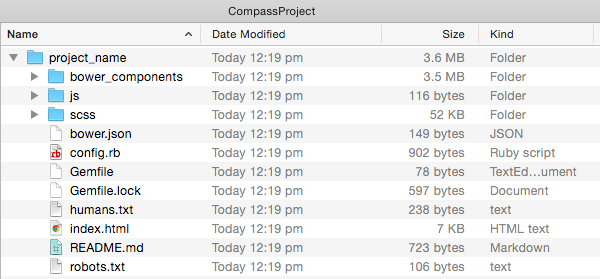
From here, you’ll need to have a terminal pointed inside your actual project folder, e.g. inside “project_name”.
The “bundler” gem you installed earlier will be used here to make sure all the required libraries have been installed. Get everything squared away by running the command:
1
bundle
You only have to do this once when you first create your Foundation Compass projects.
In the browser, your new project will look like this:
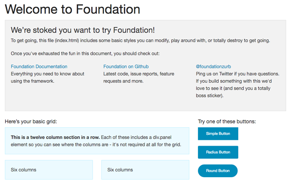
You’re now ready to start development on your project. There is an inbuilt Sass compiler that will watch the “.scss” files in the library for changes, then recompile them to css for you. Activate it with the command:
1
bundle exec compass watch
Yeoman
Yeoman is a tool designed expressly for scaffolding out new projects. It works on top of NodeJS, integrates Bower for package management, and uses Grunt or Gulp for task running.
After installing Yeoman the basic process for scaffolding any new project becomes:
Find and install a Yeoman generator for the type of project you want to create, e.g. generator-h5bp for an HTML5 Boilerplate project.
Type yo to generate a new project, e.g. yo h5bp
Read more about Yeoman at: http://yeoman.io/
Install Yeoman
To use Yeoman, you’ll need to have bower, grunt-cli and gulp installed globally, which you should have at this point as long as you’ve followed all the tutorials in the series so far.
Install Yeoman globally with the command:
1
npm install -g yo
Now you’re ready to go and find generators and scaffold new projects.
Create a Bootstrap Project
To scaffold out a Bootstrap project we’ll be using generator-gulp-bootstrap. Among other things, this generator sets you up with the Bootstrap framework, jQuery & Modernizr, BrowserSync, automatic Sass compilation via LibSass, automatic JS linting and image optimization.
Install the Generator
Install the generator globally with:
1
[sudo] npm install -g generator-gulp-bootstrap
Scaffold the Project
Point your terminal wherever you’d like to scaffold your new project and run:
1
yo gulp-bootstrap
You’ll get a little display like this in your terminal, and you’ll be able to verify that you want to use Bootstrap and Modernizr:
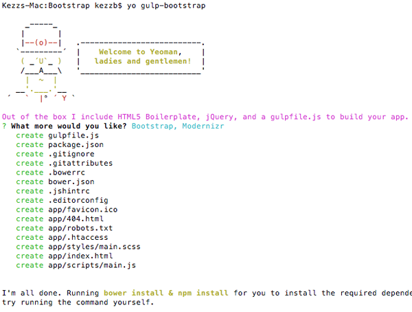
After the generator finishes running you’ll have a folder structure like this:
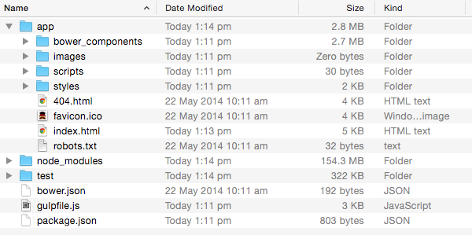
Commands
To build your project use the command:
1
gulp
To spin up a local preview with auto compilation and reload run:
1
gulp watch
In a browser, your new Bootstrap project will look like this:
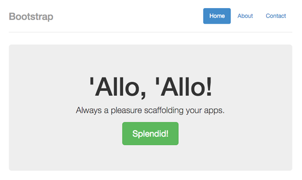
Create a HTML5 Boilerplate Project
To scaffold a new HTML5 Boilerplate project we’ll be using generator-h5bp.
Install the Generator
Install the generator globally with:
1
[sudo] npm install generator-h5bp -g
Scaffold the Project
Scaffold out your new project with this command:
1
yo h5bp
You’ll get the option to choose whether or not you want docs included in your project, then the generator will run.
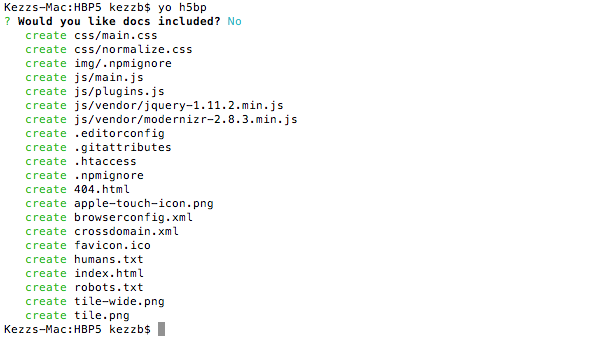
You’ll then have a new HTML5 Boilerplate project structured like so:
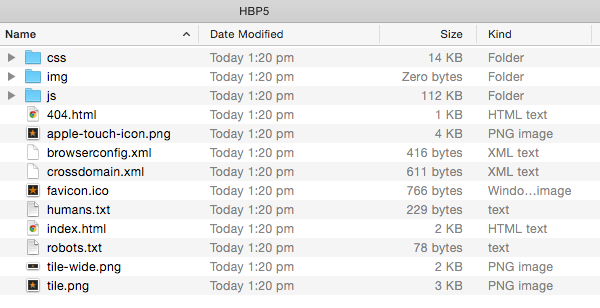
In a browser all you’ll see is a simple “Hello world!” message, but if you view the code you’ll see you have everything you need to get your HTML5 site underway:
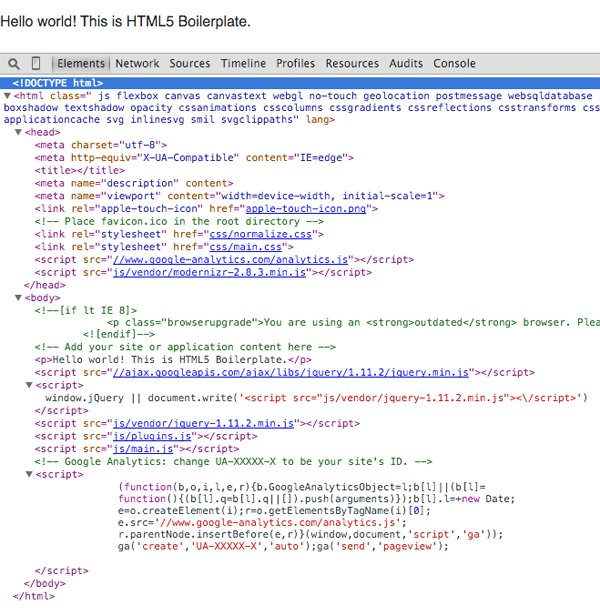
Create a Google Web Starter Kit Project
Web Starter Kit is a project by Google, designed as “boilerplate & tooling for multi-device development”. You can read all about its features at: https://developers.google.com/web/starter-kit/
To scaffold it out we'll be using generator-mobile.
Install the Generator
Install the generator globally with:
1
[sudo] npm install yeoman/generator-mobile -g
Scaffold the Project
Scaffold out your GWSK project with the command:
1
yo mobile
In your terminal you’ll answer a series of questions based on which your project will be generated:
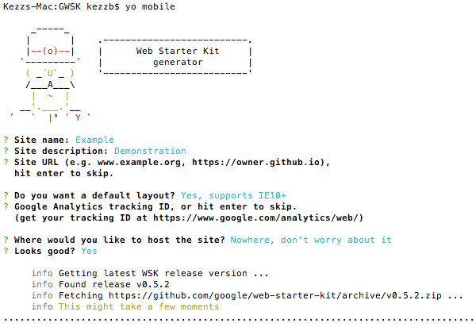
When the generator has finished running your new project will have this structure:
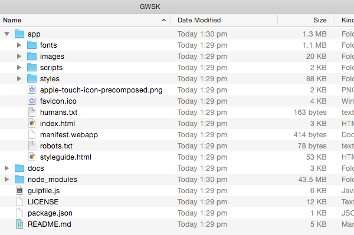
Advertisement
Commands
To open a BrowserSync powered localhost preview run this command:
1
gulp serve
The preview of your site will look like this:
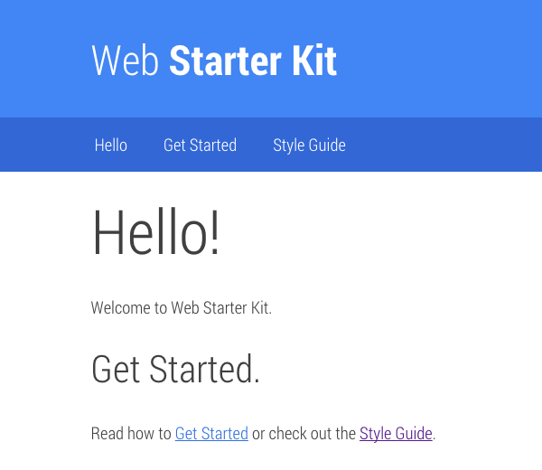
Note: After running the gulp serve command you may see an error message saying browser-sync couldn’t be found. If so, manually install it into your folder with this command:
1
[sudo] npm install browser-sync
To build the whole project run this command:
1
gulp
To get feedback on the speed of your project run:
1
gulp pagespeed
This command will give you a readout of “pagespeed” data in your terminal like so:
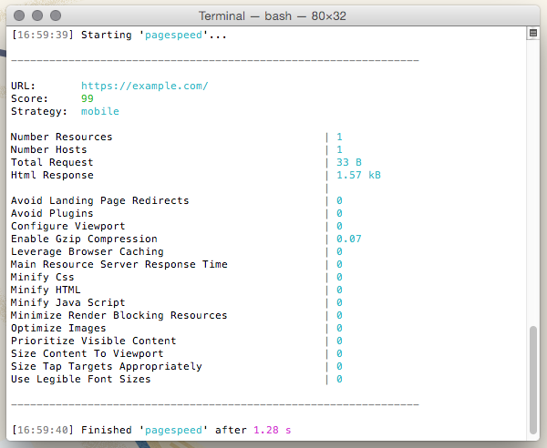
And if you chose one of the hosting options while scaffolding your project, publish your site with:
1
gulp deploy
In Conclusion
That’s just about it for this tutorial–you now have a number of tools at your finger tips for getting up and running with a few common front-end frameworks, all through the power of the command line!